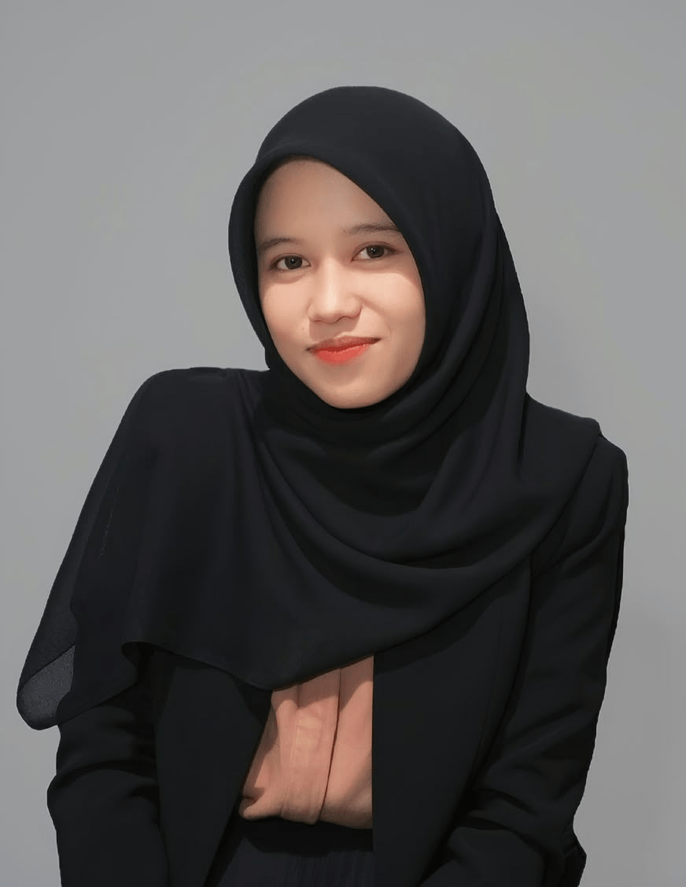

Biodata

Tentang Saya
Lulusan S1 Informatika Universitas Telkom Surabaya dengan IPK 3.84/4.00. Berlatar belakang front-end development, UI/UX, dan analisis sistem, dan saat ini mengarahkan karier ke bidang Quality Assurance. Dibekali ilmu Penjaminan Mutu Perangkat Lunak serta Implementasi & Pengujian Perangkat Lunak, didukung sertifikasi Software Quality Assurance dari MySkill, dan telah menerapkannya melalui black box testing pada proyek Sistem Informasi Rumah Sakit serta pengujian sistem dan antarmuka pada skripsi. Pengalaman membangun sistem dengan SQL, Laravel, React.js, dan Vue.js, merancang dokumen SRS dan SDD sebagai System Analyst, serta menjadi Asisten Praktikum Basis Data. Berpengalaman memahami produk dari sisi pengguna dan pengembang, sehingga terbiasa menganalisis kebutuhan, menemukan masalah lebih awal, dan berkolaborasi dengan tim. Pengalaman di berbagai kepanitiaan melatih komunikasi, manajemen waktu, dan tanggung jawab. Siap belajar dan berkontribusi dalam program magang di bidang Quality Assurance, System Analysis, atau Data Analysis.